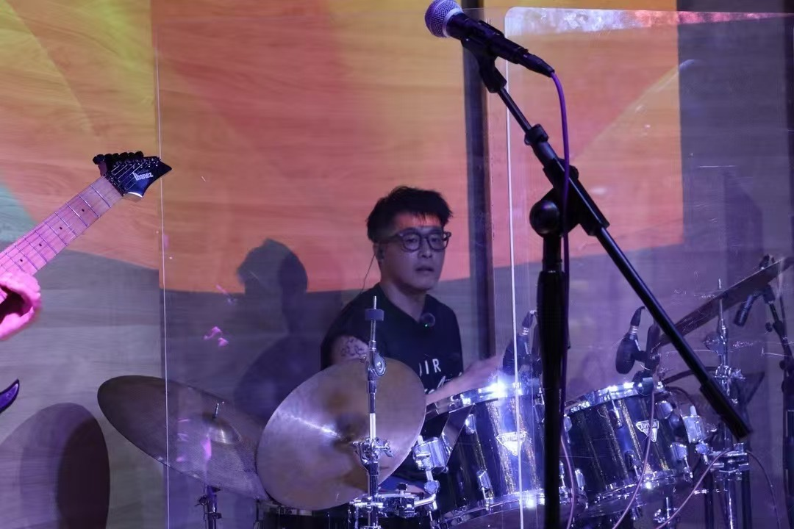
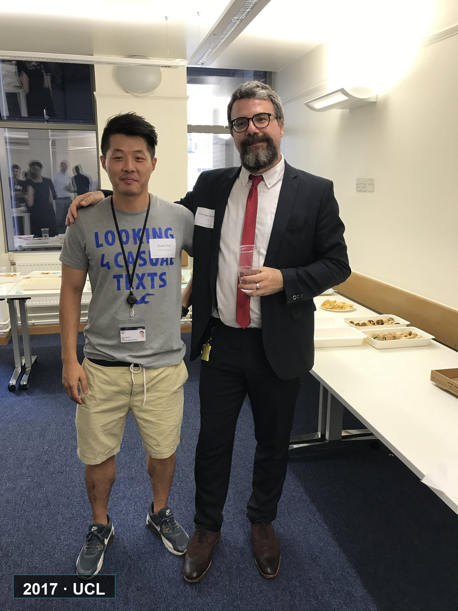

West China Hospital, Sichuan University · HMRRC
Tian Lab
Nanoneuroscience in Rhythm
Molecular tools for brain barriers, imaging, and translational nanomedicine.
The Lab
Precision, rhythm, and translation for brain science.
Research Tracks
Five tracks, one brain-centered question.
Covers & Visual Stories
When a paper becomes a visual signal.
Collaboration
Barcelona, Chengdu, and the clinic.

Adcerebri · 安赛巴瑞
Chengdu translational platform
People
A cross-disciplinary group in motion.
Join Us